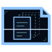

Rex makes small tools for Obsidian. Trained in medicine. Your notes stay files on your own disk.
- Video SummaryA video link in, a finished note out. 139 downloads
-
 AI Assistant SuiteAI suggests title, tags and folder. You tick what to apply.
108 downloads
AI Assistant SuiteAI suggests title, tags and folder. You tick what to apply.
108 downloads -

Git Note HistoryFind a sentence you deleted. Take back only that part. 103 downloads -
 AI AccountingA receipt in, a checked ledger entry out.
97 downloads
AI AccountingA receipt in, a checked ledger entry out.
97 downloads -
 Polyglot HelperLook up a word where you read. Meet it again.
94 downloads
Polyglot HelperLook up a word where you read. Meet it again.
94 downloads -
 Japan Work SecretaryPart-time shifts in Japan, warned before 28 hours.
69 downloads
Japan Work SecretaryPart-time shifts in Japan, warned before 28 hours.
69 downloads -
 Pass CountdownUses left, time left, and the pace to finish.
55 downloads
Pass CountdownUses left, time left, and the pace to finish.
55 downloads - TaskNotes CountdownDeadlines from TaskNotes, and whether you will make it. 49 downloads
- NoesisRead a paper in three passes and come out able to explain it. web app · no counter
- BunmyakuTurn any Japanese material into a local study desk. web app · no counter
Counts from Obsidian’s public stats file, read and every morning after. A download is any install or update, so it is not a count of people. Raw numbers.
How I build
Local, fast, at hand.
Obsidian is good because it is local and quick. A plugin of mine may not slow the vault down. If a feature costs that, the feature goes.
The tool proposes, you decide, undo always.
Nothing an AI suggests lands in a note until you tick it, and anything a plugin writes can be taken back.
When to act, and when to hand back.
Most of the design work turned out to be one question, asked again in every plugin.
| Not sure? Don’t guess. | Git Note History will not link a renamed note to its past unless the text is close enough. |
|---|---|
| Short of facts? Count on the safe side. | Japan Work Secretary counts a shift in full until you confirm the break. |
| Retrying won’t help? Stop offering it. | Video Summary sorts its failures and hides Retry when the cause is on the other side. |
| You changed the note? Step back. | Before writing, the plugin compares the note again and stops if it moved. |
| Let the reader answer first. | Noesis asks you to explain a passage, then hints, and shows its answer only when you open it. |
| Don’t interrupt. | AI Assistant Suite moved from pop-ups to a side panel you open when you want it. |
Who writes the code.
AI coding tools write it. I decide what to build and what to leave out, use every version myself, find what is wrong, choose the fix and decide when it ships. I have read the key parts and can explain why they work the way they do.
Log
This site becomes a wall. The counts now refresh every morning on their own.
One shared AI layer ships inside four plugins: keys are stored once, and every error says what to try next.
Two rules for every plugin: never trade away local, fast and at hand; release when a batch is worth it, not for every small fix.
TaskNotes Countdown, a deadline board for another author’s plugin, gets its first release.
Git Note History, the first plugin, gets its first release.
Uses
- Notes
- Obsidian, one vault called Ithaca, with a theme of my own.
- Plugins
- TypeScript and esbuild on the Obsidian API. Notes stay Markdown; history stays in Git.
- Writing code
- Claude Code and Codex. Gemini reads the long videos and PDFs.
- AI in the plugins
- Your own key. DeepSeek, Qwen, SiliconFlow, Kimi and Zhipu are built in.
- This site
- Plain HTML, CSS and JavaScript, no build step, on GitHub Pages. A GitHub Action fetches the counts each morning.
- Machine
- MacBook Pro, M1 Pro.